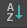

它们是 Hypershade 浏览器上的工具栏按钮。有关“Hypershade”的详细信息，请参见 Hypershade 窗口。
- 暂停材质和纹理的样例生成
-

若要启用和禁用所有节点的样例生成，请单击 Hypershade 选项卡工具栏中的
和  按钮。
按钮。
样例生成处于禁用状态时，通过单击鼠标右键并从标记菜单中选择“刷新样例”(Refresh Swatch)，可以对着色器图表中的特定节点启用样例渲染。
- “作为图标”(As Icons)查看
-

将样例显示为带有文字的图标。
作为图标查看样例时，您可以选择尺寸：小、中、大，或超大。
- “作为列表”(As List)查看
-

将样例仅显示为文字（更为简洁显示）。在具有许多着色元素（例如，材质、纹理和灯光）的大型场景中，该选项可提高“Hypershade”的性能。
作为列表查看样例时，您可以选择尺寸：“小”(Small)、“中”(Medium)、“大”(Large)或“超大”(Extra Large)。
- “作为小样例”(As Small Swatches) /“作为中等样例”(As Medium Swatches) /“作为大样例”(As Large Swatches) /“作为超大样例”(As Extra Large Swatches)查看
-
小(small)

中(medium)

大(large)
特大(extra large)
通过选择理想尺寸的样例，自定义“Hypershade”。
提示：可以在 Hypershade 选项卡中推拉（使用 Alt+鼠标右键或 Alt+鼠标左键+鼠标中间）来翻转样例大小。
- “按名称”(By Name)排序
-

按字母排序样例 (A-Z)。
- “按类型”(By Type)排序
-
按类型（例如，“Blinn”或“Phong”）将样例组合到一起，并按字母顺序 (A-Z) 对这些组排序。
- “按时间”(By Time)排序
-
按创建日期和时间排序样例（从旧到新）。
- 按“反转顺序”(Reverse Order)排序
-

使用此选项可反转排序指定的名称、类型或时间。
提示：可以通过“Hypershade”菜单栏的“视图”(View)菜单，访问此工具栏上的功能。
“Hypershade”选项卡过滤器
“Hypershade”中的每个场景选项卡（也称为“资产”选项卡）具有控件来过滤显示在选项卡中的节点（类似于“HyperGraph”）。
默认情况下，每个场景选项卡都具有隐含过滤器，该过滤器由创建选项卡时指定的选项卡类型确定（或首先创建场景时的默认选项卡）。该选项卡仅显示通过该过滤器的节点，同时无法禁用该过滤器。例如，“材质”(Materials)选项卡仅显示材质节点。
但是，可以按名称（在文本框中）或按类型（使用显示按钮）过滤选项卡中的节点。使用 * 作为通配符。
在任意给定时间，可以应用这些过滤器中的一个或多个到每个场景选项卡。将只显示通过所有已应用过滤器的节点。可以随时单击  以清除过滤器。图标也反映已应用过滤器。如果未应用过滤器，则图标显示为灰色的 。
以清除过滤器。图标也反映已应用过滤器。如果未应用过滤器，则图标显示为灰色的 。
- 清除按钮
-
单击以清除任何已应用过滤器（隐含过滤器之外）并使选项卡返回默认内容。
- 文本框
-
允许您键入字符串（这可以是常规表达式），以按名称指定要显示的节点。仅有名称匹配字符的节点显示在选项卡上。
“显示”(Show)按钮
将显示一个菜单，可以从中选择要显示节点的类型。
- 对象(Objects)
-
选择要显示的对象类型。选择“清除以下项”(Clear Below)禁用所有过滤器。
- 反转所显示内容(Invert Shown)
-
反转过滤器，以便使可见对象不可见，同时使不可见对象是可见。
- 显示全部(Show All)
-
关闭“显示”(Show)菜单中的所有过滤器。
- 显示选定类型(Show Selected Type(s))
-
仅显示与当前选择相同类型的对象类型。
- 创建条目(Create Entry)
-
允许您使用一个名称保存当前过滤器。
- 删除条目(Delete Entry)
-
允许您删除已保存过滤器。
- 显示辅助节点(Show Auxiliary nodes)
-
显示通常不会显示的节点类型，因为很少需要它们（例如，对拓节点）。
- 辅助节点(Auxiliary nodes)
-
允许您设定哪个节点被视为“辅助”。